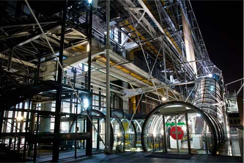
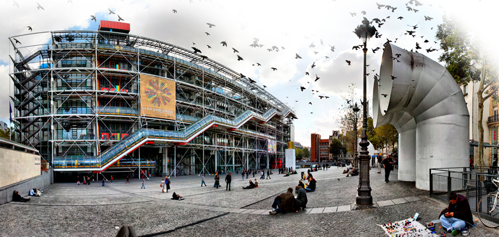
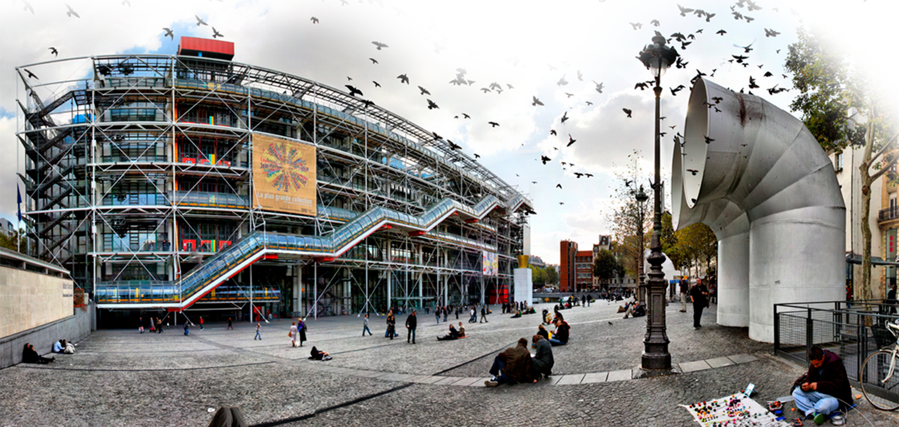

![  Помимо посещения мастерской Бранкузи и некоторых временных выставок входной билет в Центр позволяет подняться на 6-й этаж здания, откуда открывается, быть может, самый прекрасный вид на Париж. Не с птичьего полета, как с Эйфелевой башни или с Монмартра, — он открывается на уровне глаз, позволяя рассматривать город в самых мелких деталях. Если нет времени и желания смотреть современное искусство, просто посидите в кафе George на крыше.Коллекция современного искусства Центра Помпиду считается самой полной в мире (наряду с нью-йоркским музеем Метрополитен). На двух уровнях представлено более 1 400 произведений искусства XX века. Но даже после ремонта и перестановок места в музее хватило, чтобы разместить только 3% коллекции. Оригинальная идея архитекторов была в расположении всех технических конструкций (арматурные соединения, все трубопроводы, лифты и эскалаторы) снаружи здания, что позволило высвободить максимум полезной площади в 40 тыс. м². Арматурные соединения выкрашены белым цветом, вентиляционные трубы — синим, водопроводные — зелёным, электроподводка — жёлтым, а эскалаторы и лифты — красным.](preview://img/orsay_big.jpg){kind=link}

Помимо посещения мастерской Бранкузи и некоторых временных выставок входной билет в Центр позволяет подняться на 6-й этаж здания, откуда открывается, быть может, самый прекрасный вид на Париж. Не с птичьего полета, как с Эйфелевой башни или с Монмартра, — он открывается на уровне глаз, позволяя рассматривать город в самых мелких деталях. Если нет времени и желания смотреть современное искусство, просто посидите в кафе George на крыше.
Коллекция современного искусства Центра Помпиду считается самой полной в мире (наряду с нью-йоркским музеем Метрополитен). На двух уровнях представлено более 1 400 произведений искусства XX века. Но даже после ремонта и перестановок места в музее хватило, чтобы разместить только 3% коллекции. Оригинальная идея архитекторов была в расположении всех технических конструкций (арматурные соединения, все трубопроводы, лифты и эскалаторы) снаружи здания, что позволило высвободить максимум полезной площади в 40 тыс. м². Арматурные соединения выкрашены белым цветом, вентиляционные трубы — синим, водопроводные — зелёным, электроподводка — жёлтым, а эскалаторы и лифты — красным.